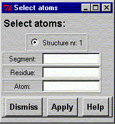

**************************************************************************
Select atoms widget
Leif Laaksonen CSC 1996
**************************************************************************
Select atoms into a selection buffer. If there are several systems available select the one you want by clicking the structure through the radio buttons available.
The selection buffer can be used for applying rotations or translations just to a subsection of a molecular system.

Line command: see select command
**************************************************************************
LUL/1996
**************************************************************************